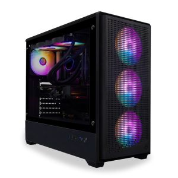

Conheça o PC Gamer Calíope VI, equipado com um processador Intel i7-14700F e 32GB de memória RAM. Este computador gamer entrega desempenho excepcional para jogos avançados e tarefas exigentes. Além disso, sua alta capacidade de memória RAM garante uma multitarefa suave e eficiente. Com um SSD M.2 1TB fornece tempos de inicialização extremamente rápidos, permitindo que você inicie suas partidas sem atrasos. Seu design robusto e contemporâneo adiciona um toque de elegância ao seu setup, enquanto o eficaz sistema de resfriamento mantém o computador em temperatura ideal durante sessões intensas de jogo. Equipado com uma GeForce RTX 5080 16GB ainda oferece gráficos deslumbrantes e velocidade incríveis, proporcionando uma experiência de jogo totalmente imersiva e envolvente.